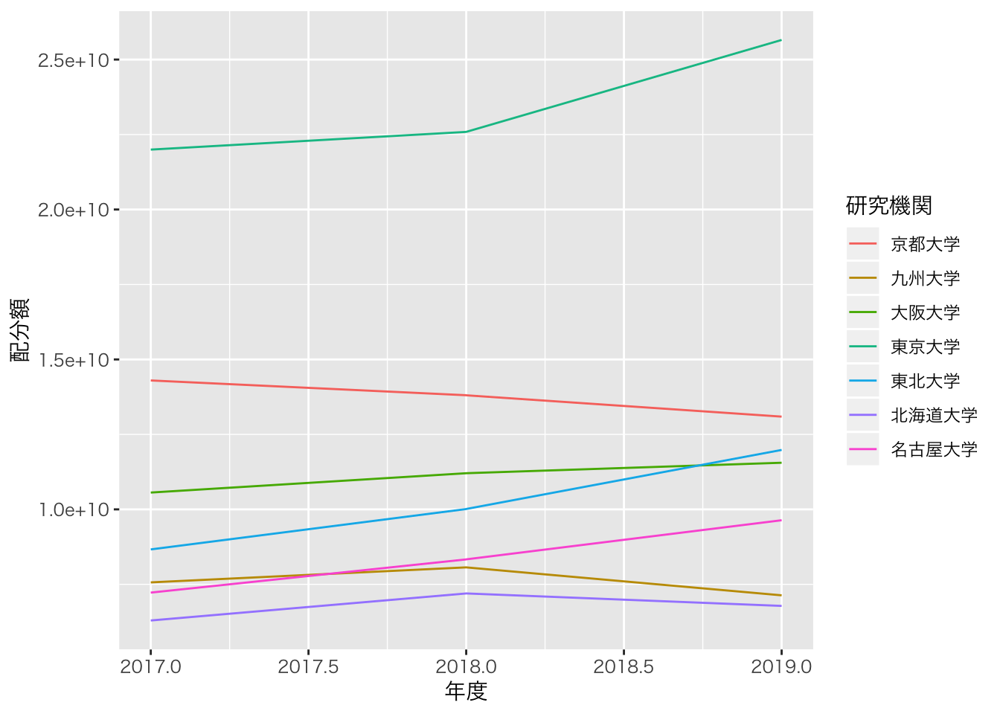
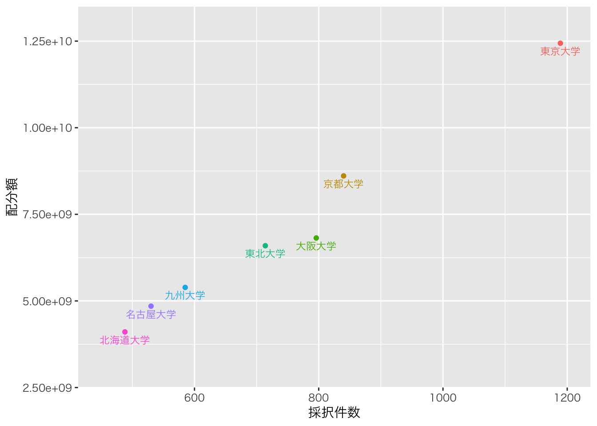
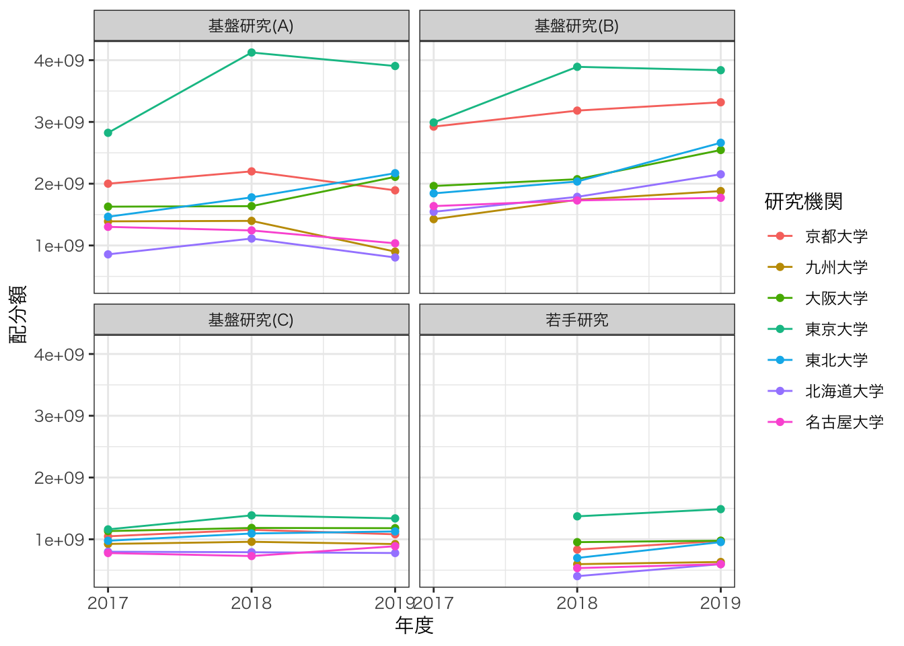
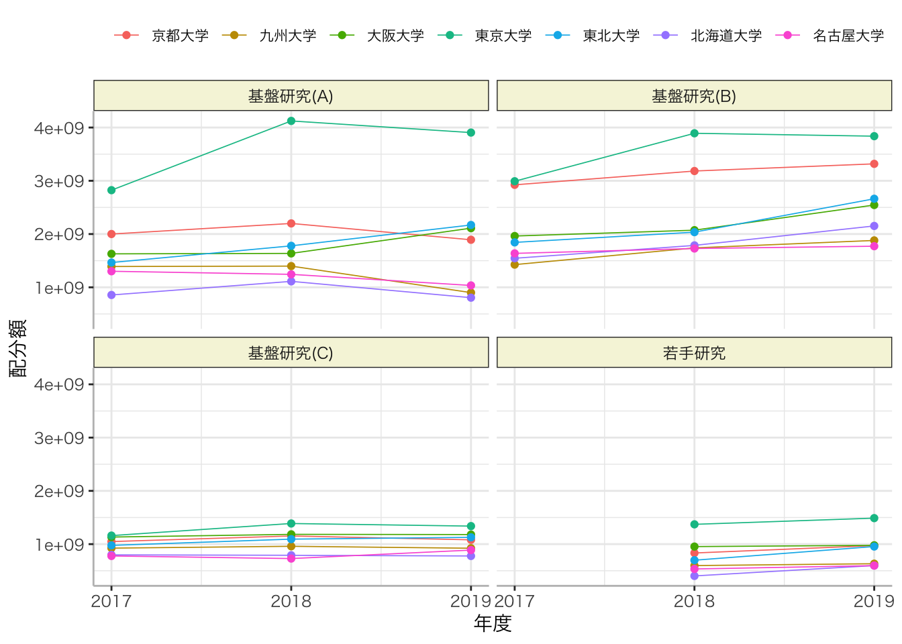

【KAKEN】データの可視化（２）
ー配分額の年度推移を折れ線グラフで可視化ー
Takuya Kubo, 2020/05/20
０. はじめに
このページでは、ggplot2パッケージを使って科研費の配分額の推移を折れ線グラフで可視化する方法を紹介していきます。具体的には以下の２種類のグラフを書いていきます。
- 2017年度から2019年度の研究機関ごとの科研費の配分額の推移
- 2017年度から2019年度の研究機関と研究種目ごとの科研費の配分額の推移
１. 下準備
必要となるパッケージは以下の通りです。今回は2017年度から2019年度の採択課題データを用いますが、データ量が多くて大変なので、あらかじめ、必要な列のみを選択してデータを読み込んでいます。
# インストールされていない場合は、以下のコマンドの「#」を外して実行
# install.packages("data.table")
# install.packages("dplyr")
# install.packages("DT")
# install.packages("ggplot2")
# パッケージの読み込み
library(data.table) # 高速なデータインポートのため
library(dplyr) # データの整理のため
library(DT) # 集計表の出力のため
library(ggplot2) # グラフ化のため
# 使用するデータのインポート（研究機関、研究種目、総配分額のみ）
d2017 <- fread("kaken_2017.csv", select = c("研究機関", "研究種目", "総配分額"))
d2018 <- fread("kaken_2018.csv", select = c("研究機関", "研究種目", "総配分額"))
d2019 <- fread("kaken_2019.csv", select = c("研究機関", "研究種目", "総配分額"))２. 下準備
総配分額をnumeric型に変換し、年度情報を付与した上で３年度分のデータを結合します。また、研究機関は旧帝大のみに限定しておきます。
D1 <- bind_rows( # データフレームの縦結合
d2017 %>% mutate(総配分額 = as.numeric(総配分額), 年度 = 2017), # 総配分額をnumeric型に変換し、年度情報の列を作成
d2018 %>% mutate(総配分額 = as.numeric(総配分額), 年度 = 2018), # 同上
d2019 %>% mutate(総配分額 = as.numeric(総配分額), 年度 = 2019) # 同上
) %>%
# 研究機関の絞り込み
filter(研究機関 %in% c("北海道大学","東北大学", "東京大学", "名古屋大学", "京都大学", "大阪大学", "九州大学"))
D1 %>%
sample_n(500) %>% # 500行をランダムに選択
datatable() # 可視化３. 研究機関ごとの科研費の配分額の推移
３.１. データの集計
グラフ化に先立って、研究機関ごとの科研費の配分額の推移を集計しておきます。group_by関数により研究機関と年度でグループ化を行い、summarize関数を用いてグループごとの総配分額の合計を計算します。
D2 <- D1 %>%
group_by(研究機関, 年度) %>%
summarize(配分額 = sum(総配分額))
datatable(D2)３.２. グラフ化
最低限の折れ線グラフを書くためには、ggplot関数、aes関数、そしてgeom_line関数が必要になります。aes関数内部ではx軸に年度、y軸に配分額を指定します。また、機関によって線を分けるために、線の色に研究機関を指定しています。theme_gray関数は日本語が表示できるフォントに変更するために用いています。
ggplot(D2, aes(x = 年度, y = 配分額, color = 研究機関)) +
geom_line() +
theme_gray(base_family = "HiraKakuPro-W3")
少しだけデザインを変更するためのコードを記しておきます。以下のコードでは線の種類を破線に変更し、各データポイントに点を打つようにしています。また、x軸メモリが0.5刻みなのは意味をなさないため、１年刻みとなるように修正しています。
ggplot(D2, aes(x = 年度, y = 配分額, color = 研究機関)) +
# 線の種類を破線に変更
geom_line(linetype = "dashed") +
# 各データポイントに点を打つ
geom_point() +
theme_bw(base_family = "HiraKakuPro-W3") +
# x軸メモリを
scale_x_continuous(breaks = c(2017:2019))
４. 研究機関と研究種目ごとの科研費の配分額の推移
４.１. データの集計
次に研究機関と研究種目ごとに科研費の配分額の推移を示していきたいと思いますが、その前にデータの集計をやり直します。以下では、まず研究種目と若手研究と基盤研究（A〜C）に限定し、研究機関、研究種目、年度でグループ化したうえで、総配分額の合計を計算しています。
D3 <- D1 %>%
filter(研究種目 %in% c("若手研究", "基盤研究(A)", "基盤研究(B)", "基盤研究(C)")) %>%
group_by(研究機関, 研究種目,年度) %>%
summarize(配分額 = sum(総配分額))
datatable(D3)４.２. グラフ化
先ほど作ったグラフに研究種目の情報を加える方法としては、aes関数内で特定のグラフ要素に研究種目を指定する方法が挙げられます。例えば、以下のように研究種目によって線のタイプ（linetype）を変える、といった方法です。しかし、ご覧の通り７機関×４種目で28本の線が引かれたため、何かしらの知見を得ることは極めて困難です。
ggplot(D3, aes(x = 年度, y = 配分額, color = 研究機関, linetype = 研究種目)) +
geom_line() +
geom_point() +
scale_x_continuous(breaks = c(2017:2019)) +
theme_bw(base_family = "HiraKakuPro-W3")
上記の通り、折れ線グラフではaes関数で変数を増やしづらいため、今回はfacet_wrap関数を用いる方法を紹介いたします。facet_wrap関数は特定の変数（列）の値によってパネルを分割する関数です。細かく行列数を指定することもできますが、以下の例では２×２のパネルで、年度推移の折れ線グラフを表示してくれています。
ggplot(D3, aes(x = 年度, y = 配分額, color = 研究機関)) +
geom_line() +
geom_point() +
scale_x_continuous(breaks = c(2017:2019)) +
theme_bw(base_family = "HiraKakuPro-W3") +
# 研究種目の値ごとにグラフを異なるパネルに表示
facet_wrap(facets = vars(研究種目))
facet_wrap関数を用いることによって、研究種目ごとに各研究機関の配分額の推移が分かりやすくなったのではないかと思います。欠点としてはどうしても１つのパネルが小さくなってしまいますので、各パネルが見やすくなるように色々と調整を行なう必要があります。以下のコードは色々と調整を行なっているのですが、特に、凡例の位置を工夫することでスペースを有効に使えるかと思います。
ggplot(D3, aes(x = 年度, y = 配分額, color = 研究機関)) +
geom_line(size = 0.3) + # 線を太さを細く変更
geom_point() +
scale_x_continuous(breaks = c(2017:2019)) +
theme_bw(base_family = "HiraKakuPro-W3") +
facet_wrap(facets = vars(研究種目)) +
theme(panel.border = element_blank(), # パネルの枠を削除
axis.line = element_line(color = "gray"), # 軸線の追加
legend.position = "top", # 凡例の位置を上部に移動
legend.title = element_blank(), # 凡例のタイトルを削除
legend.text = element_text(size = 8), # 凡例のサイズを変更
strip.background = element_rect(fill = "beige"), # パネルのタイトルの色を変更
panel.spacing = unit(0.3, "lines")) + # パネル間の位置を狭める
guides(col = guide_legend(nrow = 1)) # 凡例を１行で表示
５. おわりに
今回はggplot2パッケージを用いて、科研費の配分額の年次推移を折れ線グラフで描画する方法を紹介いたしました。IRを担当される方にとっては、科研費に限らず、論文数やtop10%論文割合、ランキング指標等、経年変化をモニターする機会も多いのではないかと思います。そのような際に折れ線グラフは不可欠ですので、R言語で試しに使ってもらえたら幸いです。なお、今回見てきたように、折れ線グラフは視認性の観点から比較的に一度に扱える変数の数は多くないと思います。色々とグラフ要素に変数を指定することはできますが、あくまでも読み手が理解しやすいデザインとなるようにご留意ください。これがなかなか大変ですが…